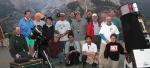
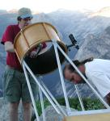
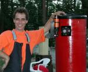
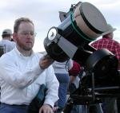
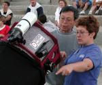

“Reminded me of an artillery wagon, but it also could have been mistaken for a section of storm drain pipe.”
|  |
{kind=link}
|  |
{kind=link}
|  |
{kind=link}
|  |
{kind=link}

|
|  |
{kind=link}
I attended the SJAA public star party at Yosemite's Glacier Point, July 5-6, 2002. This was a first for me, since I am fairly new to the hobby. I purchased my first scope (NexStar 11 GPS) 7 months ago; and other than Henry Coe park I hadn't ever been to anything resembling a dark site.
The first night was fabulous: extremely dark sky, very clear; gazillions of stars. Seeing was excellent. I was able to split the double-double (epsilon lyrae) cleanly at low magnifications, and even at 295X both pairs were in the field of view with significant gaps in each pair. I also got better views of galaxies (M82, M51, M31) than I had ever gotten before - especially M31, which was very bright. The ring, dumbell and swan nebulae were also great views, even without a filter.
This was the first time I'd ever actually seen the Milky Way. It looked like a large, bright white cloud (with black rifts) extending from horizon to horizon. I felt as though I could have just sat there all night gazing at the sky without the need of binoculars or scope. In fact, I did that for quite a while.
I stayed up until about 3 a.m. the first night and quit when the crescent moon began to rise. When I finished packing up, there were only about three people left: Morris and Jane Houston Jones, and Mike Koop. They seemed to be having a lot of fun finding objects in their big scopes.
During the daytime I drove down to the valley floor, got a hamburger at Yosemite Village, and then drove to a picnic spot below El Portal to do some fishing. I caught and released a nice rainbow trout and then headed back up to Glacier Point.
The second night was quite cloudy, and there were some noisy teenagers chatting and giggling nearby. I got discouraged and packed up at midnight. Of course, as soon as I finished loading my van the sky cleared up completely - and the teenagers had gone. But I was tired, so it was a good thing that I quit early.
SJAA shared the two nights with the Central Valley astronomers (Fresno and Merced), so there were quite a few scopes present - most of them SCTs and reflectors. They had some large dobs down on Aperture Row - the lowest tier of the rocky amphitheatre. The biggest scope was a 24-inch monster that arrived in its own trailer. Reminded me of an artillery wagon, but it also could have been mistaken for a section of storm drain pipe. I got to peek through it a couple of times and was immediately afflicted with aperture fever. The objects were significantly brighter and more detailed than through my own scope.
Mike Koop had a large dob there (one of the club's loaner scopes) and showed me an impressive view of the swan nebula. Morris Jones let me take a look at B86 (a dark object) through his big dob. Other than that, I pretty much stuck to my own scope and didn't mooch many views elsewhere.
The group campsite was overcrowded when I arrived, with no room for any more tents and/or parking. I was planning to sleep in my minivan anyway (my loud snoring would have been intolerable to the other campers), but since there was no more room in any of the bear boxes for my food I decided to sleep in the Glacier Point parking lot. There are several bear boxes available there for use by hikers, so my food storage problem was solved.
Speaking of bears, I happened upon a couple of black bears in the Glacier Point parking lot at about 5:30 a.m. on the second morning, when I was returning from the restroom. Luckily, the first one was about 120 yards away when I saw him (a big one), and I was able to walk back to the car before he noticed me. I didn't see the second bear (it was on the upper level but pretty close to where I was parked) until I drove past it on the way out of the parking lot. It was seated on its haunches, eating something - hopefully no astronomers are missing...
On the way home I stopped and fished for a little while again, hoping to take a couple of trout home for the wife. But I ended up going swimming instead (thanks to a very slippery rock), so I changed clothes, called it a quits and headed home.
In summary, it was a very good experience and the views were fantastic. I'm definitely planning to attend again next year. But I'll be careful where I park at night and will wait until daylight to go to the restroom.
[For more photos from the 2002 Glacier Point Star Party, visit Mojo's Photo Album]